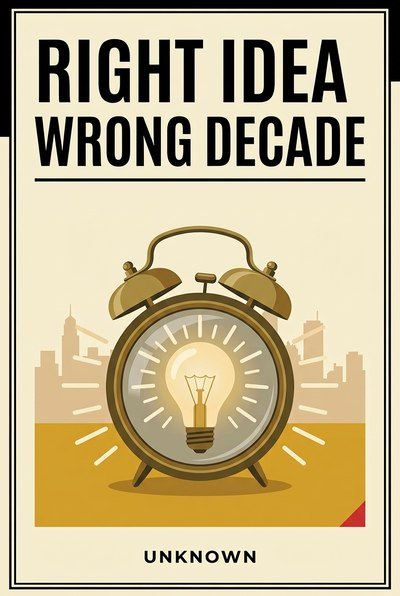

Library › History
Right Idea, Wrong Decade — Summary & Key Lessons

Being early looks exactly like being wrong, until the decade catches up with the idea.
📖 OPEN THE FULL INTERACTIVE BREAKDOWN →🌐 Read it in Hindi, Hinglish, Gujarati, Tamil & 22 more languages — free, with audio.
💡 The Big Idea
Markets do not reward being right; they reward being right on time. The history of innovation is a graveyard of correct ideas that arrived before their infrastructure, their costs or their customers: video calls waited fifty years for bandwidth, tablets waited for batteries, grocery delivery waited for phones in pockets. Being early is indistinguishable from being wrong to everyone watching, including investors, and the pioneer's reward is usually a headstone the follower builds on. This book is the timing manual nobody writes: how to tell a bad idea from an early one, why first movers are market teachers, how to educate markets on someone else's budget, and which signals (cost curves, behavior shifts, regulation) announce that a decade has finally arrived for an idea you shelved. Its cases are real and public; its doctrine is for anyone sitting on a graveyard idea that keeps ticking.
🧠 The 11 Key Lessons
Lesson 1: Early Is Indistinguishable From Wrong
Chapter 1: The Twin Mistakes
To every outside observer, the doomed idea and the premature one produce identical evidence: no adoption, no revenue, patient money turning impatient. This is the cruelest asymmetry in markets, because it means you cannot judge your own timing by feedback alone; the same silence greets the fool and the prophet. The only reliable separation is structural: what exactly is missing, and is it permanent or just not yet.
📖 Example: Grocery delivery died publicly in the dot-com winter and triumphed two decades later with the same idea, different phones in pockets; Webvan's autopsy and BigBasket's rise are the same business wearing different decades. Read the full example →
⚡ Do this: Take your failed or shelved idea and write the sentence: 'It failed because X was missing.' Then label X permanent or temporary, with the evidence that would prove the label.
Lesson 2: The Idea Is Cheap, The Decade Is Dear
Chapter 2: Infrastructure Sets the Clock
Ideas are abundant and free; decades are what they cost. Nearly every 'sudden' innovation waited on unglamorous infrastructure: bandwidth, batteries, payment rails, logistics, or simply a generation's habits. The builder's real question is never whether the idea works, but what infrastructure it is standing in line for, and how far back that line goes.
📖 Example: Video calling demoed flawlessly in 1964 and meant nothing until broadband and front cameras made it free; electric cars predate the gasoline Model T by decades, and waited a century for battery cost curves to catch up with the idea. Read the full example →
⚡ Do this: List the three infrastructure inputs your moonshot waits on. Put a date or a price point next to each, and check one of them this month.
Lesson 3: First Mover Is a Euphemism for Teacher
Chapter 3: The Pioneer's Tuition
Pioneers pay for the market's education: they teach customers the category, train regulators, burn through distribution experiments and publish, in failures, the exact map of the minefield. Followers enter against a market that already understands the pitch, and spend their capital on polish instead of persuasion. First is a cost position disguised as a trophy.
📖 Example: Google entered as roughly the twentieth search engine, Facebook was not the first social network, and the iPod was absolutely not the first MP3 player; each inherited a classroom the pioneer had already paid for with its existence. Read the full example →
⚡ Do this: Before entering any 'unclaimed' market, find its pioneer's grave and write down the three lessons the headstone teaches. Enter with those three as your design constraints.
Lesson 4: Timing Is a Product Feature
Chapter 4: Ship the Same Thing, Later
The same product shipped in different decades is a different product, because timing changes the surrounding world more than engineering changes the object. Treating timing as a feature means designing for the decade deliberately: what to strip because the market is young, what to add because the market is tired, and when to hold a working thing back because the room is not ready.
📖 Example: Apple's iPad succeeded where a decade of tablets failed by shipping into ready chips, ready apps and ready habits, and every 'overnight' relaunch you have ever admired was an old product matched to a new decade on purpose. Read the full example →
⚡ Do this: Put dates on your roadmap items that answer 'why now?' If an item has no why-now, either it is early (park it) or it is filler (kill it).
Lesson 5: Educate the Market on Someone Else's Budget
Chapter 5: The Giant's Ad Spend
The most expensive part of a new category is teaching the market to want it, and giants with marketing budgets can be borrowed to do the teaching. Positioning just behind a giant's category spend lets a small player harvest demand it could never afford to create: their ads warm the room, your product catches the buyer who wants the thing without the compromise.
📖 Example: Tesla's decade of evangelism sold the world on electric and every following EV maker inherited the warm market, just as every airline that followed a pioneer route and every store that opened next to a category-creating anchor harvested what the first mover's budget planted. Read the full example →
⚡ Do this: Identify who is currently spending millions educating your future market. Position one offer to catch their overflow this quarter, priced for the buyer who wants the alternative.
Lesson 6: The Graveyard Is a Library
Chapter 6: Reading Dead Products
Dead products are books, and most teams never read them. Every failed product carries a thesis, a cost structure and a user story that can be audited for which leg broke: the tech, the price, the habit or the era. Autopsying the dead turns history from trivia into compound knowledge, and it is the cheapest R&D any team will ever run.
📖 Example: Google Glass's autopsy, social circling apps, early smartwatches, the pen computing of the 1990s: each failure, read correctly, became a chapter in the design brief of a later success, and the teams that did the reading shipped the sequels. Read the full example →
⚡ Do this: Start a monthly autopsy habit: one dead product, one page, four lines (thesis, cost, user, which leg broke). File it where the roadmap meets it.
Lesson 7: Prototypes Keep Dreams Cheap
Chapter 7: The Ten-Thousand-Dollar Decade Bet
Early ideas deserve experiments, not companies: a prototype costs weeks and keeps the option alive, while a full launch bets the payroll on a decade you do not control. The discipline is sizing the bet to the certainty: full builds for arrived decades, scrappy prototypes for early ones, and a written date on the shelf for everything in between.
📖 Example: The labs that shipping giants keep (and the ones that vanished) differ less in ideas than in bet sizing, and every crowdfunded 'first' that shipped a product instead of a proof paid full-company price for a decade-wide question. Read the full example →
⚡ Do this: Take one shelved idea and design a thirty-day, fixed-budget prototype that answers only the question 'is the decade here yet?' No launch, no hiring, one question.
Lesson 8: Watch the Cost Curve, Not the Hype Curve
Chapter 8: The Decade Arrives by Invoice
Hype announces decades that do not arrive; cost curves announce the ones that do. When the key component's price crosses the threshold where the product becomes a default purchase rather than a statement, the decade has arrived, regardless of press coverage. Tracking component costs turns timing from prophecy into arithmetic.
📖 Example: Solar crossed grid parity region by region while remaining a press joke, batteries crossed thresholds year by year until EVs stopped being statements, and smartphone diffusion made 'app economy' a real place long before the word trended. Read the full example →
⚡ Do this: Pick the one component or input cost that gates your idea. Subscribe to its price like you would a stock, with a written threshold that activates the plan.
Lesson 9: Revisit Your Dead Ideas on a Calendar
Chapter 9: The Revival List
Every team has a drawer of near-misses that were right about the world and early about the clock. The discipline that separates compounding organizations from lucky ones is a revival list: dead ideas kept with their autopsies, reviewed on a calendar against new cost curves and new behavior, so that timing changes can be caught rather than mourned.
📖 Example: The comeback stories of every re-released category, from smart pens to folding screens to grocery delivery, were usually spotted first by someone who had kept the old autopsy in a drawer and noticed the decade turning. Read the full example →
⚡ Do this: Create the revival list this week: every dead idea you loved, one line each, reviewed quarterly. The list costs nothing and catches decades.
Lesson 10: Being Early Means Surviving First
Chapter 10: Runway Beats Vision
The early mover's only job is to still be standing when the decade arrives, which makes runway, not vision, the strategic asset. Teams that spend to the bone proving a decade-long thesis in a two-year window die exactly at the finish line of their own correctness. Patience is a balance-sheet property, and survival is the pioneer's only compounding advantage.
📖 Example: General Magic employed the future's best minds and the future's best ideas and ran out of money a decade before the decade, and every legendary 'too early' autopsy reads the same: the vision was right and the runway was not. Read the full example →
⚡ Do this: Before any moonshot commitment, protect eighteen months of runway that the moonshot cannot touch. Write the firewall down; enthusiasm ignores unwritten rules.
Lesson 11: The Right Decade Announces Itself
Chapter 11: Three Signals and a Date
Arrived decades share three visible signals: the cost curve crossed, a behavior shift already normal somewhere younger, and regulation or infrastructure that stopped fighting the idea. Watch all three and timing stops being luck. The closing discipline of timing is therefore not daring but attention, scheduled, patient and written down.
📖 Example: Electric cars, food delivery, video-first social and remote work each clicked when cost, behavior and rules finally pointed the same way, and the operators watching those dials moved in quarters, not years, ahead of the headlines. Read the full example →
⚡ Do this: Define your three arrival signals for your shelved idea today: one cost number, one behavior stat, one rule or infrastructure fact. Check them on the quarterly revival list.
✅ 5-Step Action Plan
- Label your shelved idea's missing piece permanent or temporary, with evidence.
- Write the three lessons from your market's pioneer grave; enter by them.
- Run a thirty-day, fixed-budget prototype on one early idea this quarter.
- Track your gating component's price with a written activation threshold.
- Start the revival list and the quarterly review; park ideas, do not bury them.
⚠️ When This Doesn't Work
This is a TheSmallBook Original, published under the name Unknown. The timing histories cited (Webvan, video calling, tablets, Google Glass, General Magic, Tesla's halo) are real public record, compressed for teaching and simplified where archives differ. The book cannot tell you your decade is here; it can only make sure you are watching the dials when it is.
💀 The Graveyard Proves It
🥽 Google Glass — $1,500 to Be Called a 'Glasshole'. Burn: Consumer launch dead in 2 years. Read the full case study →
💬 Best Quotes from Right Idea, Wrong Decade
- “The market punishes a wrong idea and an early one identically. Only the autopsy can tell them apart.”
- “Pioneers draw the map. Followers own the roads.”
- “Track the cost curve, not the hype curve. The decade arrives by invoice.”
Interactive version: mark lessons as read, listen in your language, share quote cards.